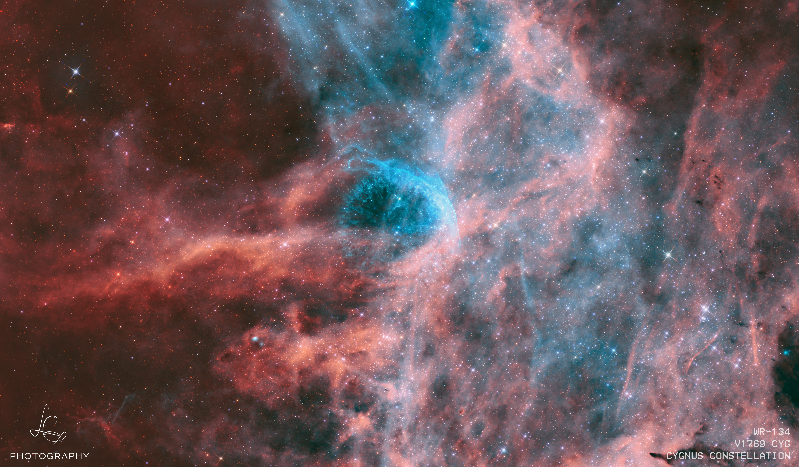

The log
Newest first · 41 frames · 612h integration · 2021–2026
{{ c.date }} · {{ c.pal }}
{{ c.id }}
{{ c.sub }}
{{ c.blurb }}
{{ c.meta }}
Acquisition & processingTarget
{{ t.id }} — {{ t.sub }}
Frame / Rev
{{ t.frame }}
Integration
{{ t.total }}
{{ p.k }}
{{ p.v }}
Target & processing
{{ para }}
Note to self
{{ t.note }}
Per-filter integration
| Night | Filter | Sub | Kept | Rej. | Reason |
|---|---|---|---|---|---|
| {{ s.date }} | {{ s.filter }} | {{ s.sub }} | {{ s.kept }} | {{ s.rej }} | {{ s.why }} |
Equipment
Adjacent frames
{{ a.id }}
{{ a.meta }}
About
Narrowband from
a Bortle 9 sky
Montréal is about as bad a place to photograph the sky as a city can be. The compensation is 3nm filters, a small fast refractor, and a lot of patience: every image here is the sum of many short nights, most of them interrupted.
Each article records what was shot, what was thrown away, and why — including the frames that never made it into the stack. That log is half the point of the site.
{{ t2.v }}
{{ t2.k }}
Current rig

WR 134 · 24h 10m · HOOPrints & licensing
Full-resolution TIFFs and pigment prints up to 24 × 36″. Editorial use by arrangement.
Get in touch